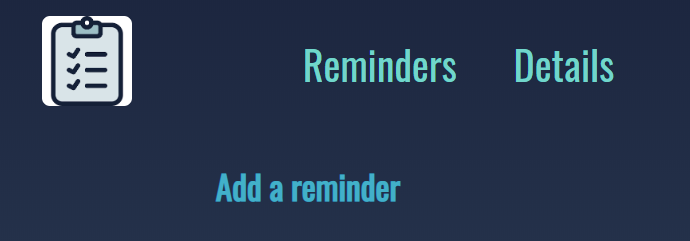

First iteration of the website ever. Basic nav bar with image taking the user back to the home landing page.
I did not like how the white box around the home page image was ruining the style of the website. To change this I took the image into a word document and removed the background (white parts) from the image allowing the image to blend with the background.